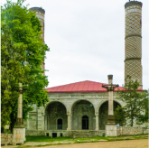

“XARIBÜLBÜL” BEYNƏLXALQ FOLKLOR FESTİVALI


Mədəniyyət paytaxtımız olan Şuşa, 270 yaşını qeyd edir.
MƏDƏNİYYƏT
PAYTAXTI - ŞUŞA!
Şuşa şəhərinin əsası 18-ci əsrin ortalarında qoyulub. Tarixi mənbələrə görə, Qarabağ xanı Pənahəli xan aramsız hücumlardan qorunmaq üçün 1750-ci illərdə Bayat və Şahbulaq adlı qalalar tikdirsə də, bu qalalardan heç biri xanlığı fasiləsiz müharibələrdən qoruya bilmir.
Memarlıq abidələri


- 
Tarixi simalar
V Festival - 2022
FESTİVALIN TARİXİ
2022-ci ildə Şuşa şəhərində keçirilən beynəlxalq folklor festivalı
2022-ci il 12-14 may tarixində Şuşa şəhərində keçirilmiş V Xarıbülbül Beynəlxalq Folklor festivalında etno elektronik musiqi, folk-caz, folk-rok, folk-pop və mütəlif zəngin dünya musiqi janrlarından ifalar təqdim edilmişdir. Şuşa şəhərində iki müxtəlif məkanda – Əsas və Kiçik səhnələrdə

-
Azərbaycan Respublikasının
Prezidentipresident.az
-
Azərbaycan Respublikasının
Birinci Vitse-Prezidentimehriban-aliyeva.az
-
Heydər Əliyev
Fonduheydar-aliyev-foundation.az
-
Heydər Əliyev
Mərkəziheydaraliyevcenter.az
-
Mədəniyyət Nazirliyi
mct.gov.az